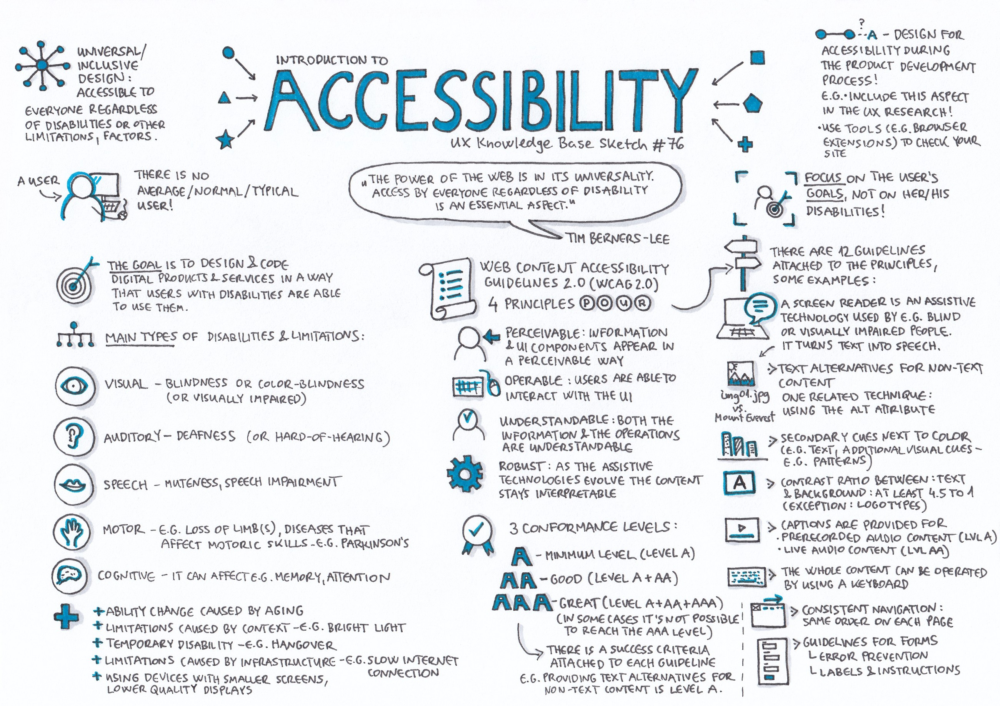
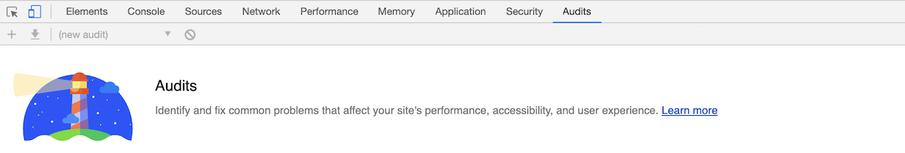
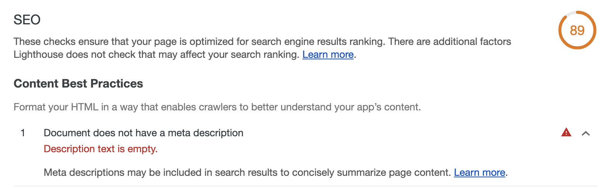

The Process of Analyzing my Blog
Welcome back to another week of my findings on Web Accessibility! This week is all my Journal! Since, I am blogging about user accessibility it is only appropriate to make sure my Blog fits that criteria. I will be using the google audit tool to identify my sites performance, accessibility and user experience. I will also be fixing my site’s overall visual appearance and menu options. This will give the users a better opportunity to navigate easily throughout the site.
Before and After of my Homepage
Hopfully you will notice the improvements and learn how those changes make for a better web experience.
Dropdown Menu options
Using Google Audit
Audit Errors
Next I will show you my errors after conducting my Google Audit and what I have chosen to fix
Meta Error
Were there any problems that couldn't be fixed?
I did not face many technical challenges while I was making changes to my site's accessibility, however I did receive errors from the Audit scan. These errors let me know of issues that could be fixed to improve my sites performance and appearance and more. I could not fix all errors, but I did my best to make sure I received a 100% Web Accessibility grade. There was one error I could not resolve and that was not having a configured custom splash screen and a set address-bar. This could be because each page does have different layouts and background pictures.
Is the Bootstrap Framework overall helpful or harmful to the goal of creating accessible web pages?
The Bootstrap framework was helpful at structing my page, but I did make changes to multiple pages so that I could move images and text around. All pages had an HTML element container, but I needed to change the fixed-width grid layout into a full-width layout by adding the fluid element so that I had free range of flexibility.